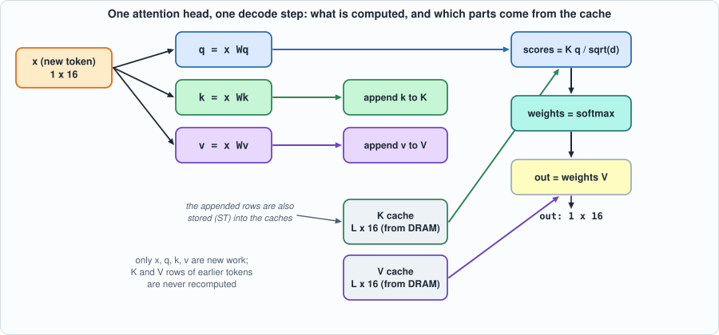
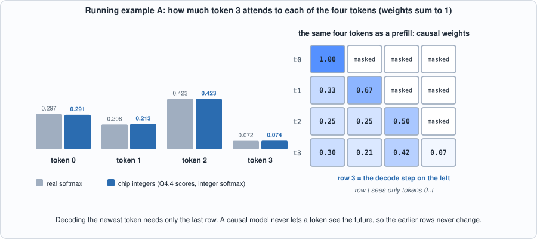
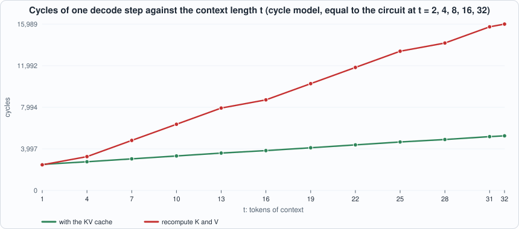
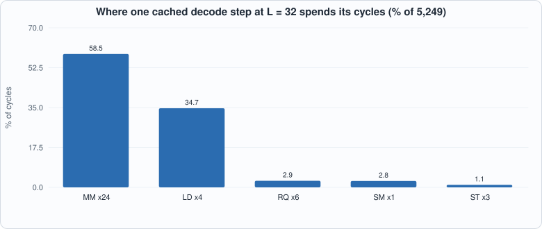
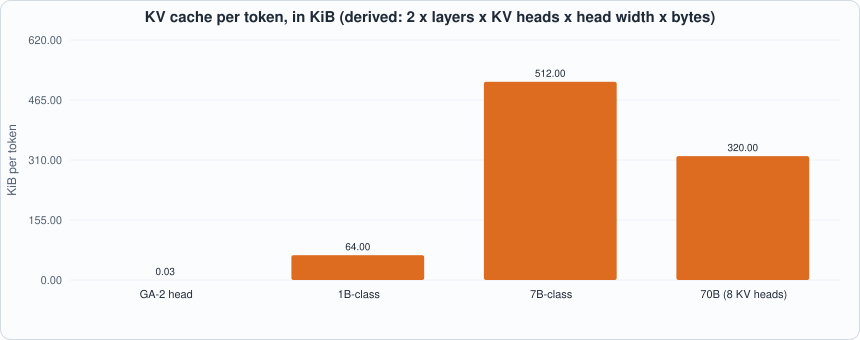
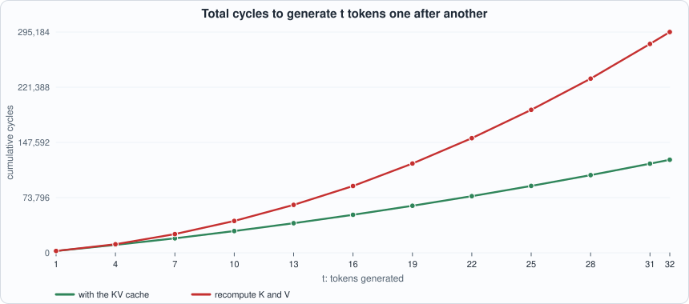
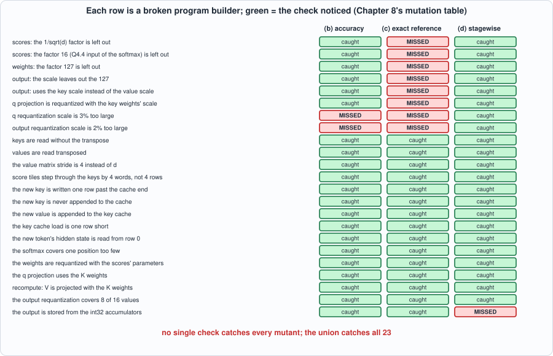

8. Attention and the KV Cache: One Decode Step, From Hidden State to Output¶
About the animals in this picture and where they are standing
- West Caucasian tur (Capra caucasica) lives only in the western Caucasus, on steep slopes above the forest line. Its horns are short and heavy, curving outward and back, and it moves up and down cliffs with ease.
- Markhor (Capra falconeri) lives in the mountains of Pakistan, Afghanistan and neighbouring regions. The males' horns twist in a corkscrew; the name is often explained as Persian for 'snake-eater'. It is Pakistan's national animal, and community-based conservation has helped some populations recover.
- Bezoar ibex (wild goat) (Capra aegagrus) lives from Turkey and the Caucasus through Iran to Pakistan. It is the wild ancestor of the domestic goat, which people began keeping some ten thousand years ago.
- Alpine ibex (Capra ibex) lives in the European Alps, usually above the tree line on steep rock, and is a famously sure-footed climber. Males carry horns that can reach about a metre. Hunting left only a small remnant, around the Gran Paradiso in Italy, by the early 1800s; reintroductions have since restored it across the Alps.
The scene is imaginary: it is set on Enceladus, a small icy moon of Saturn whose south pole sprays water-ice geysers; Saturn and its rings loom overhead. The animals are stylised drawings, shown where they could not live, for effect.
What you will understand: what a language model actually computes to produce one token, why it keeps a KV cache, and what the cache costs and saves, measured in cycles on the chip of Chapter 7. You will write the decode step as a GA-2 program (the hand-written forerunner of the compiler of Chapter 11), run it on the RTL, compare its answer with floating-point attention, see where the quantization error comes from, and then test the program builder by mutation, where three different kinds of check turn out to have three different blind spots.
What you need to know first: Chapters 3 (quantization), 6 (softmax) and 7 (the GA-2 instruction set). Appendix E (transformers and LLM inference) explains the model around this step if you have not met attention before.
What this chapter builds: model/attn.py (the attention step as GA-2 programs, in two variants, plus an integer reference and a stage-by-stage checker), tools/ch08_run.py, tools/ch08_study.py, tools/mut_ch08.py, and for the running examples tools/ch08_example_a.py and tools/ch08_example_b.py.
Why this chapter: the part of a language model that remembers¶
A language model writes text one token at a time. To choose the next token it must look back at all the previous ones: which earlier words matter for this one? That look-back is attention, and it is the only place in a transformer where tokens interact. Everything else (the feed-forward blocks, the normalizations) processes each token on its own.
For a chip designer, attention is where two expensive things meet. It needs memory that grows: the model must keep something about every earlier token. And it needs arithmetic that is awkward for a systolic array: products of a single vector with a big matrix, which use a small fraction of the array. The first is the KV cache; the second is the subject of Chapter 9. This chapter builds the step, measures it on the chip of Chapter 7, and shows what the cache buys.
What a decode step computes¶
A transformer generates text one token at a time. For each new token, every attention head does this (one head shown; d is its width):
q = x Wq k = x Wk v = x Wv x: the hidden state of the newest token
scores = K q / sqrt(d) K: the keys of ALL tokens so far, one row each
weights = softmax(scores)
out = weights V V: the values of all tokens so far

Figure 8.1: one attention head, one decode step. Green and purple are the cache; only the four boxes on the left are new work.Figure 8.1: one attention head, one decode step. Green and purple are the cache; only the boxes on the left are new work.
The matrices K and V have one row per token. The key insight is that the rows for old tokens never change: token 5's key is x_5 Wk whatever token 6 is. So instead of recomputing K and V for the whole prefix at every step, the model stores them: that is the KV cache. Each step computes k and v only for the new token, appends them, and attends over the stored rows.
Because each step attends to the new token and all earlier ones (never later ones), the causal mask is automatic in decoding: there is nothing "later" in the cache to hide. (Masks matter in prefill, where a whole prompt is processed at once.)
A tiny example by hand¶
Before the machine, the arithmetic on numbers small enough to check. Four tokens, vectors of width 2. The newest token's query is q = [1, 0.5]; the keys are [[1,0],[0,1],[1,1],[-1,0]]. Each score is a dot product divided by sqrt(2): [0.707, 0.354, 1.061, -0.707]. Softmax turns those into weights [0.297, 0.208, 0.423, 0.072]: token 2 gets the most, because its key [1,1] is the most similar to the query. The output is the weighted average of the four value vectors. Running example A below does exactly this, then repeats it in the chip's integers and as a causal prefill.

Figure 8.2: left, the weights of the decode step in real numbers and in the chip's integers (the largest difference is 0.006, almost all of it from rounding the scores to 1/16). Right, the same four tokens processed as a prefill: row t attends only to tokens 0..t; the last row is the decode step.A tiny example by hand¶
Before the machine, the arithmetic on numbers small enough to check. Four tokens, vectors of width 2. The newest token's query is q = [1, 0.5]; the keys are [[1,0],[0,1],[1,1],[-1,0]]. Each score is a dot product divided by sqrt(2): [0.707, 0.354, 1.061, -0.707]. Softmax turns those into weights [0.297, 0.208, 0.423, 0.072]: token 2 gets the most, because its key [1,1] is the most similar to the query. The output is the weighted average of the four value vectors. Running example A below does exactly this, then repeats it in the chip's integers and as a causal prefill.
Figure 8.2: left, the weights of the decode step in real numbers and in the chip's integers (the largest difference is 0.006, almost all of it from rounding the scores to 1/16). Right, the same four tokens processed as a prefill: row t attends only to tokens 0..t; the last row is the decode step.
The same step as GA-2 programs: model/attn.py¶
#!/usr/bin/env python3
"""Chapter 8: one attention head, for one decode step, as GA-2 programs, with a floating-point reference.
THE MATHS. x_t is the hidden state of the newest token (Dm numbers). q = x_t Wq, k_t = x_t Wk, v_t = x_t Wv. The keys K and values V of all L tokens so far (the last row is k_t, v_t) are the KV CACHE.
scores = K q / sqrt(d) weights = softmax(scores) out = weights V
Every tensor is int8 with one scale each; the int32 results of a matrix product are brought back to int8 by a requantizer with M = (scale_a * scale_b) / scale_out (Chapter 3).
TWO PROGRAMS for the same step:
'cached' the caches of the L-1 earlier tokens live in external memory; compute q, k_t, v_t for the new token only, append k_t and v_t to the caches, attend.
'recompute' no cache: recompute K and V for ALL L tokens from their hidden states every step, then attend. (They produce identical outputs; the cost is the difference.)
Memory plan (words). EXTERNAL: X at 0 (L x Dm), Wq 512, Wk 768, Wv 1024 (Dm x d each), K cache 2048, V cache 2560, output 3072. SCRATCHPAD: see SP_* below."""
import math, os, random, sys
os.environ.setdefault("GA2_EXT", "8192") # the attention programs need an 8192-word external memory (set before ga2_isa is imported)
sys.path.insert(0, os.path.dirname(os.path.abspath(__file__)))
import ga2_isa as I
from quant import quantize, scale_for, mantissa_shift, requant, matmul_int8
from softmax_gold import softmax_fixed
DM, D = 16, 16 # model width and head width
EX_X, EX_WQ, EX_WK, EX_WV, EX_KC, EX_VC, EX_OUT = 0, 512, 768, 1024, 2048, 2560, 3072
SP_X, SP_WQ, SP_WK, SP_WV, SP_ACC, SP_KC, SP_VC = 0, 512, 768, 1024, 1280, 1792, 2304
SP_Q, SP_Q8, SP_S, SP_S8, SP_P, SP_W, SP_O, SP_O8, SP_KN, SP_VN = 2816, 2832, 2848, 2880, 2912, 2944, 2976, 2992, 3008, 3024
B = I.build
# ---------------------------------------------------------------- data and scales
def make_example(L, seed):
R = random.Random(seed); g = lambda r, c, sd: [[R.gauss(0, sd) for _ in range(c)] for _ in range(r)]
X = g(L, DM, 1.0); W = [g(DM, D, 1 / math.sqrt(DM)) for _ in range(3)]
mm = lambda A, Bm: [[sum(A[i][t] * Bm[t][j] for t in range(len(Bm))) for j in range(len(Bm[0]))] for i in range(len(A))]
Q, K, V = (mm(X, w) for w in W); q = Q[-1]
sc = [sum(q[i] * K[p][i] for i in range(D)) / math.sqrt(D) for p in range(L)]; mx = max(sc); e = [math.exp(v - mx) for v in sc]; z = sum(e)
out = [sum(e[p] / z * V[p][i] for p in range(L)) for i in range(D)]
flat = lambda M: [v for r in M for v in r]
sc_ = {"x": scale_for(flat(X)), "wq": scale_for(flat(W[0])), "wk": scale_for(flat(W[1])), "wv": scale_for(flat(W[2])), "q": scale_for(q), "k": scale_for(flat(K)), "v": scale_for(flat(V)), "o": scale_for(out)}
return {"L": L, "X": X, "W": W, "out_float": out, "scales": sc_}
def rq_params(example):
"""(mantissa, shift) of every requantization in the program, from the scales."""
s = example["scales"]; ms = mantissa_shift
return {"q": ms(s["x"] * s["wq"] / s["q"]), "k": ms(s["x"] * s["wk"] / s["k"]), "v": ms(s["x"] * s["wv"] / s["v"]),
"scores": ms(s["q"] * s["k"] / math.sqrt(D) * 16), # int32 q.k -> real score x 16 (the softmax takes Q4.4)
"weights": ms(127 / 65536), # Q0.16 probability -> int8 weight in 0..127
"out": ms(s["v"] / (127 * s["o"]))} # sum(w * v) -> int8 at the output scale
def ext_image(example):
"""External memory with X, the weights and (for 'cached') the K and V caches of the first L-1 tokens, all int8-quantized."""
s = example["scales"]; L = example["L"]; img = [0] * I.EXT; w32 = lambda v: v & 0xFFFFFFFF
for t in range(L):
for c in range(DM): img[EX_X + t * DM + c] = w32(quantize(example["X"][t][c], s["x"]))
for wi, (base, nm) in enumerate(((EX_WQ, "wq"), (EX_WK, "wk"), (EX_WV, "wv"))):
for r in range(DM):
for c in range(D): img[base + r * D + c] = w32(quantize(example["W"][wi][r][c], s[nm]))
return img
# ---------------------------------------------------------------- the programs
def tail(L, P):
"""Attention over the K and V caches in the scratchpad (rows 0..L-1), for the q in SP_Q8; the result goes to ext[EX_OUT]."""
prog = []
for j in range((L + 3) // 4):
n = min(4, L - 4 * j); prog.append(B("MM", dst=SP_S + 4 * j, A=SP_Q8, B=SP_KC + 4 * j * D, M=1, K=D, N=n, tb=1, lda=D, ldb=D, ldc=4)) # scores of 4 positions at a time
prog.append(B("RQ", dst=SP_S8, src=SP_S, len=L, m=P["scores"][0], s=P["scores"][1]))
prog.append(B("SM", dst=SP_P, src=SP_S8, len=L))
prog.append(B("RQ", dst=SP_W, src=SP_P, len=L, m=P["weights"][0], s=P["weights"][1]))
for c in range(D // 4):
prog.append(B("MM", dst=SP_O + 4 * c, A=SP_W, B=SP_VC + 4 * c, M=1, K=L, N=4, tb=0, lda=L, ldb=D, ldc=4)) # 4 columns of the output at a time
prog.append(B("RQ", dst=SP_O8, src=SP_O, len=D, m=P["out"][0], s=P["out"][1]))
prog.append(B("ST", src=SP_O8, dst=EX_OUT, len=D))
return prog
def project(x_addr, w_addr, acc, rows, row_stride_acc):
"""MM instructions computing acc = x (rows x Dm) times w (Dm x d), 4 output columns at a time (and 4 rows at a time)."""
out = []
for i in range((rows + 3) // 4):
m = min(4, rows - 4 * i)
for j in range(D // 4): out.append(B("MM", dst=acc + 4 * i * row_stride_acc + 4 * j, A=x_addr + 4 * i * DM, B=w_addr + 4 * j, M=m, K=DM, N=4, tb=0, lda=DM, ldb=D, ldc=row_stride_acc))
return out
def program(L, variant, P):
prog = []
if variant == "cached":
prog += [B("LD", dst=SP_X, src=EX_X + (L - 1) * DM, len=DM), B("LD", dst=SP_WQ, src=EX_WQ, len=3 * DM * D)]
if L > 1: prog += [B("LD", dst=SP_KC, src=EX_KC, len=(L - 1) * D), B("LD", dst=SP_VC, src=EX_VC, len=(L - 1) * D)]
prog += project(SP_X, SP_WQ, SP_Q, 1, 4) + project(SP_X, SP_WK, SP_KN, 1, 4) + project(SP_X, SP_WV, SP_VN, 1, 4)
prog += [B("RQ", dst=SP_Q8, src=SP_Q, len=D, m=P["q"][0], s=P["q"][1]),
B("RQ", dst=SP_KC + (L - 1) * D, src=SP_KN, len=D, m=P["k"][0], s=P["k"][1]), B("RQ", dst=SP_VC + (L - 1) * D, src=SP_VN, len=D, m=P["v"][0], s=P["v"][1]),
B("ST", src=SP_KC + (L - 1) * D, dst=EX_KC + (L - 1) * D, len=D), B("ST", src=SP_VC + (L - 1) * D, dst=EX_VC + (L - 1) * D, len=D)] # append to the cache
else:
prog += [B("LD", dst=SP_X, src=EX_X, len=L * DM), B("LD", dst=SP_WQ, src=EX_WQ, len=3 * DM * D)]
prog += project(SP_X, SP_WK, SP_ACC, L, D) + [B("RQ", dst=SP_KC, src=SP_ACC, len=L * D, m=P["k"][0], s=P["k"][1])]
prog += project(SP_X, SP_WV, SP_ACC, L, D) + [B("RQ", dst=SP_VC, src=SP_ACC, len=L * D, m=P["v"][0], s=P["v"][1])]
prog += project(SP_X + (L - 1) * DM, SP_WQ, SP_Q, 1, 4) + [B("RQ", dst=SP_Q8, src=SP_Q, len=D, m=P["q"][0], s=P["q"][1])]
return prog + tail(L, P) + [B("HALT")]
def sequence(example):
"""Decode token by token from an EMPTY cache: step t (t = 1..L) attends over t tokens. The 'cached' program reads the caches that the previous steps appended to external memory
(the external memory persists from step to step); the 'recompute' program ignores them. Returns, per step, both programs, the external memory each starts from, and both int8 outputs."""
L = example["L"]; P = rq_params(example); ext = ext_image(example); steps = []
for t in range(1, L + 1):
prog_c = program(t, "cached", P); m_c = I.Machine(ext).run(prog_c)
prog_r = program(t, "recompute", P); m_r = I.Machine(ext_image(example)).run(prog_r)
out = lambda m: [I.s8(m.ext[EX_OUT + i]) for i in range(D)]
steps.append({"t": t, "cached": (prog_c, list(ext), out(m_c)), "recompute": (prog_r, ext_image(example), out(m_r)), "spad": list(m_c.spad)})
ext = m_c.ext
return steps
def rel_error(example, out8):
o = example["out_float"]; so = example["scales"]["o"]; d = [a * so - b for a, b in zip(out8, o)]
return math.sqrt(sum(x * x for x in d) / D) / math.sqrt(sum(b * b for b in o) / D)
def int_reference(example, t):
"""The integer result of decode step t (t tokens), written straight from the maths with plain Python lists: no instructions, no tiles, no addresses. It shares only the arithmetic helpers
(requantization, int8 matrix product, integer softmax) with the machine, so it checks the PROGRAM -- the tiling, strides, scales and the cache -- and not the arithmetic."""
s = example["scales"]; P = rq_params(example)
Xq = [[quantize(v, s["x"]) for v in r] for r in example["X"][:t]]
Wq = [[[quantize(v, s[nm]) for v in r] for r in W] for W, nm in zip(example["W"], ("wq", "wk", "wv"))]
rqm = lambda M, key: [[requant(a, *P[key]) for a in r] for r in M]
q8 = rqm(matmul_int8([Xq[-1]], Wq[0]), "q")[0]; K8 = rqm(matmul_int8(Xq, Wq[1]), "k"); V8 = rqm(matmul_int8(Xq, Wq[2]), "v")
scores = [requant(sum(q8[i] * K8[p][i] for i in range(D)), *P["scores"]) for p in range(t)]
w = [requant(v, *P["weights"]) for v in softmax_fixed(scores)]
return [requant(sum(w[p] * V8[p][c] for p in range(t)), *P["out"]) for c in range(D)]
def stagewise_problems(example, st):
"""Check every stage of a decode step against the REAL-NUMBER MEANING of its scale: the int8 values left in the scratchpad must equal the real-valued arithmetic on the previous stage's values,
rounded, to within one level. It uses no mantissa/shift parameters and none of the builder's code, so it can see a wrong scale that an exact comparison with the same parameters cannot."""
t = st["t"]; s = example["scales"]; sp = st["spad"]; probs = []
rnd = lambda v: max(-127, min(127, int(math.floor(abs(v) + 0.5)) * (1 if v >= 0 else -1)))
g = lambda base, n: [I.s32(sp[base + i]) for i in range(n)]
Xq = [[quantize(v, s["x"]) for v in r] for r in example["X"][:t]]
Wq = [[[quantize(v, s[nm]) for v in r] for r in W] for W, nm in zip(example["W"], ("wq", "wk", "wv"))]
def stage(name, got, want):
bad = sum(1 for a, b in zip(got, want) if abs(a - b) > 1)
if bad: probs.append(f"step {t}: stage {name}: {bad} of {len(got)} values are more than one level from the real-number result")
q8 = g(SP_Q8, D); stage("q", q8, [rnd(sum(Xq[-1][i] * Wq[0][i][c] for i in range(DM)) * s["x"] * s["wq"] / s["q"]) for c in range(D)])
K8 = g(SP_KC, t * D); V8 = g(SP_VC, t * D)
stage("k", K8, [rnd(sum(Xq[p][i] * Wq[1][i][c] for i in range(DM)) * s["x"] * s["wk"] / s["k"]) for p in range(t) for c in range(D)])
stage("v", V8, [rnd(sum(Xq[p][i] * Wq[2][i][c] for i in range(DM)) * s["x"] * s["wv"] / s["v"]) for p in range(t) for c in range(D)])
S8 = g(SP_S8, t); stage("scores", S8, [rnd(sum(q8[i] * s["q"] * K8[p * D + i] * s["k"] for i in range(D)) / math.sqrt(D) * 16) for p in range(t)])
e = [math.exp((v - max(S8)) / 16) for v in S8]; z = sum(e)
W8 = g(SP_W, t); stage("weights", W8, [rnd(v / z * 127) for v in e])
O8 = g(SP_O8, D); stage("output", O8, [rnd(sum(W8[p] / 127 * V8[p * D + c] * s["v"] for p in range(t)) / s["o"]) for c in range(D)])
return probs
def check_pipeline(seeds=range(4), Ls=(1, 2, 5, 9, 16, 24), bound=None, exact=False, stagewise=False):
"""Decode whole sequences both ways. At EVERY step the two programs' outputs must be identical (and, if `exact`, identical to the integer reference; if `stagewise`, every stage consistent with its real-number meaning), and at the last step the error against floating point must stay under the bound.
Returns (worst error, problems)."""
worst = 0.0; problems = []
for L in Ls:
for seed in seeds:
ex = make_example(L, 100 * L + seed)
for st in sequence(ex):
if st["cached"][2] != st["recompute"][2]: problems.append(f"L={L} seed={seed} step {st['t']}: cached and recompute outputs differ")
if exact and st["cached"][2] != int_reference(ex, st["t"]): problems.append(f"L={L} seed={seed} step {st['t']}: differs from the integer reference")
if stagewise: problems += stagewise_problems(ex, st)
e = rel_error(ex, st["cached"][2]); worst = max(worst, e)
if bound is not None and e > bound: problems.append(f"L={L} seed={seed}: error {e:.3f} over the bound {bound}")
return worst, problems
if __name__ == "__main__":
w, pr = check_pipeline(exact=True, stagewise=True); print("worst relative error", round(w, 4), "problems", pr)
The file builds two programs for the same step:
- cached: load the new token's hidden state, the weights and the L-1 cached rows of K and V; project q, k, v for the new token; requantize them to int8; append k and v to the caches in external memory (two
STs); then attend. - recompute: no cache. Project K and V for all
Ltokens from their hidden states, in 4 x 4 tiles, then attend.
Attention itself (tail) is the same in both, and each line is an instruction of Chapter 7: scores for four positions at a time (MM with tb=1 so the key rows are read as columns, straight out of the cache with no copy), RQ into the softmax's Q4.4 input range, SM, RQ to int8 weights, MM of weights by V four output columns at a time, RQ to int8, ST. Below is the cached program for the third token, as assembled:
0 LD dst=0 src=32 len=16
1 LD dst=512 src=512 len=768
2 LD dst=1792 src=2048 len=32
3 LD dst=2304 src=2560 len=32
4 MM dst=2816 A=0 B=512 M=1 K=16 N=4 tb=0 lda=16 ldb=16 ldc=4
5 MM dst=2820 A=0 B=516 M=1 K=16 N=4 tb=0 lda=16 ldb=16 ldc=4
6 MM dst=2824 A=0 B=520 M=1 K=16 N=4 tb=0 lda=16 ldb=16 ldc=4
7 MM dst=2828 A=0 B=524 M=1 K=16 N=4 tb=0 lda=16 ldb=16 ldc=4
8 MM dst=3008 A=0 B=768 M=1 K=16 N=4 tb=0 lda=16 ldb=16 ldc=4
9 MM dst=3012 A=0 B=772 M=1 K=16 N=4 tb=0 lda=16 ldb=16 ldc=4
10 MM dst=3016 A=0 B=776 M=1 K=16 N=4 tb=0 lda=16 ldb=16 ldc=4
11 MM dst=3020 A=0 B=780 M=1 K=16 N=4 tb=0 lda=16 ldb=16 ldc=4
12 MM dst=3024 A=0 B=1024 M=1 K=16 N=4 tb=0 lda=16 ldb=16 ldc=4
13 MM dst=3028 A=0 B=1028 M=1 K=16 N=4 tb=0 lda=16 ldb=16 ldc=4
14 MM dst=3032 A=0 B=1032 M=1 K=16 N=4 tb=0 lda=16 ldb=16 ldc=4
15 MM dst=3036 A=0 B=1036 M=1 K=16 N=4 tb=0 lda=16 ldb=16 ldc=4
16 RQ dst=2832 src=2816 len=16 m=14805262 s=31 relu=0
17 RQ dst=1824 src=3008 len=16 m=14169786 s=31 relu=0
18 RQ dst=2336 src=3024 len=16 m=10052026 s=31 relu=0
19 ST src=1824 dst=2080 len=16
20 ST src=2336 dst=2592 len=16
21 MM dst=2848 A=2832 B=1792 M=1 K=16 N=3 tb=1 lda=16 ldb=16 ldc=4
22 RQ dst=2880 src=2848 len=3 m=8883301 s=33 relu=0
23 SM dst=2912 src=2880 len=3
24 RQ dst=2944 src=2912 len=3 m=16646144 s=33 relu=0
25 MM dst=2976 A=2944 B=2304 M=1 K=3 N=4 tb=0 lda=3 ldb=16 ldc=4
26 MM dst=2980 A=2944 B=2308 M=1 K=3 N=4 tb=0 lda=3 ldb=16 ldc=4
27 MM dst=2984 A=2944 B=2312 M=1 K=3 N=4 tb=0 lda=3 ldb=16 ldc=4
28 MM dst=2988 A=2944 B=2316 M=1 K=3 N=4 tb=0 lda=3 ldb=16 ldc=4
29 RQ dst=2992 src=2976 len=16 m=8670777 s=29 relu=0
30 ST src=2992 dst=3072 len=16
31 HALT
Every requantizer in it has its own scale, and the scales have to be right. rq_params derives them from the six tensor scales: for example the scores' multiplier is scale_q * scale_k / sqrt(d) * 16 (the 16 because the softmax unit's input is the score times 16). This is the kind of arithmetic a compiler must do for the user, and a place where bugs hide.

Figure 8.3: the cycle model's cost of one decode step as the context grows, with and without the cache (equal to the circuit's counter at the five lengths it was run).Figure 8.3: the cycle model's cost of one decode step as the context grows, with and without the cache (equal to the circuit's counter at the five lengths it was run).
Running it on the chip¶
#!/usr/bin/env python3
"""Chapter 8: the attention step as GA-2 programs, run on the RTL in both simulators, with the cost of the KV cache measured. Usage: ch08_run.py"""
import os, re, sys
os.environ["GA2_EXT"] = "8192"
sys.path.insert(0, os.path.dirname(os.path.abspath(__file__))); sys.path.insert(0, os.path.join(os.path.dirname(os.path.abspath(__file__)), "..", "model"))
import hw, ga2_isa as I, ga2_progs as G, attn
F = ["rtl/sram.v", "rtl/dma.v", "rtl/systolic.v", "rtl/requant.v", "rtl/exp_lut.v", "rtl/divu.v", "rtl/rowmem.v", "rtl/ga2_vec.v", "rtl/ga2_sm.v", "rtl/ga2_mm.v", "rtl/ga2.v", "tb/extmem_rw.v", "tb/ga2_tb.v"]
def line(out): return ([l for l in out.splitlines() if l.startswith(("PASS", "FAIL", "MISMATCH"))] or out.strip().splitlines()[-2:])[0]
print("== 1. the 'cached' program for the third token (L = 3), as assembled\n")
ex3 = attn.make_example(3, 1); P3 = attn.rq_params(ex3); prog3 = attn.program(3, "cached", P3)
for k, ins in enumerate(prog3): print(f"{k:3d} {I.disassemble(ins)}")
print(f"\n{len(prog3)} instructions; the same step without a cache ('recompute') is {len(attn.program(3, 'recompute', P3))}.")
print("\n== 2. both programs for L = 2, 4, 8, 16, 32 on the circuit (the last step of a decode loop, example seed 1), against the reference simulator")
progs = []; meta = []
for L in (2, 4, 8, 16, 32):
ex = attn.make_example(L, 1); last = attn.sequence(ex)[-1]
for var in ("cached", "recompute"):
prog, ext_before, out8 = last[var]; progs.append((prog, ext_before)); meta.append((L, var, prog, out8))
assert last["cached"][2] == last["recompute"][2]
words = [len(progs)]
for prog, ext in progs: words += G.record(prog, ext)
open(os.path.join(hw.ROOT, "out", "ga2_programs.hex"), "w").write("\n".join("%08x" % (w & 0xFFFFFFFF) for w in words) + "\n")
res = {}
for name, fn in (("Icarus", hw.sim_icarus), ("Verilator", hw.sim_verilator)):
rc, out = fn(F, "ga2_tb", defines=("EXTW=8192", "DUMP")); print(f" {name:10s}{line(out)} (exit {rc})")
for m in re.finditer(r"COUNTERS (\d+) (\d+) (\d+) (\d+) (\d+) (\d+)", out): res[int(m.group(1))] = [int(g) for g in m.groups()[1:]]
print("\n== 3. what the KV cache saves (cycle counters read from the circuit; the two programs give identical outputs at every step)")
print(f"{'L':>3s} {'program':10s} {'instr':>5s} {'total':>7s} {'matrix':>7s} {'DMA':>6s} {'vector':>7s} {'cycles saved by the cache':>26s}")
for i, (L, var, prog, out8) in enumerate(meta):
tot, mm, dma, vec, n = res[i]; extra = ""
if var == "cached": extra = f"{res[i+1][0] / tot:5.2f}x faster than recompute"
print(f"{L:3d} {var:10s} {n:5d} {tot:7d} {mm:7d} {dma:6d} {vec:7d} {extra:>26s}")
print("\n== 4. where the cycles go in one cached step at L = 32 (from the cycle model, whose totals match the circuit's counters above)")
ex = attn.make_example(32, 1); prog = attn.program(32, "cached", attn.rq_params(ex)); per = {}
for ins in prog:
if ins["op"] != "HALT": per.setdefault(ins["op"], [0, 0]); per[ins["op"]][0] += 1; per[ins["op"]][1] += 2 + I.wait_cycles(ins)
tot = sum(v[1] for v in per.values())
for op, (n, c) in sorted(per.items(), key=lambda kv: -kv[1][1]): print(f" {op:5s} {n:3d} instructions {c:6d} cycles {100*c/tot:5.1f}%")
print(f" total {tot} cycles")
print("\n== 5. how big is a KV cache? (derived arithmetic, not measured)")
print(f"GA-2 head: 2 (K and V) x {attn.D} (head width) x 1 byte (int8) = {2*attn.D} bytes per token; a 32-token context holds {32*2*attn.D} bytes.")
for name, layers, heads, dh, byt in (("a 7B-class transformer (32 layers x 32 heads x 128), fp16", 32, 32, 128, 2), ("the same with an int8 cache", 32, 32, 128, 1)):
per_tok = 2 * layers * heads * dh * byt; print(f"{name}: {per_tok:,} bytes per token = {per_tok/1024:.0f} KiB; a 4096-token context = {per_tok*4096/2**30:.2f} GiB")
Output (cloud sandbox -- live-executed; Icarus Verilog 12.0, Verilator 5.020, Yosys 0.33)
== 1. the 'cached' program for the third token (L = 3), as assembled
0 LD dst=0 src=32 len=16
1 LD dst=512 src=512 len=768
2 LD dst=1792 src=2048 len=32
3 LD dst=2304 src=2560 len=32
4 MM dst=2816 A=0 B=512 M=1 K=16 N=4 tb=0 lda=16 ldb=16 ldc=4
5 MM dst=2820 A=0 B=516 M=1 K=16 N=4 tb=0 lda=16 ldb=16 ldc=4
6 MM dst=2824 A=0 B=520 M=1 K=16 N=4 tb=0 lda=16 ldb=16 ldc=4
7 MM dst=2828 A=0 B=524 M=1 K=16 N=4 tb=0 lda=16 ldb=16 ldc=4
8 MM dst=3008 A=0 B=768 M=1 K=16 N=4 tb=0 lda=16 ldb=16 ldc=4
9 MM dst=3012 A=0 B=772 M=1 K=16 N=4 tb=0 lda=16 ldb=16 ldc=4
10 MM dst=3016 A=0 B=776 M=1 K=16 N=4 tb=0 lda=16 ldb=16 ldc=4
11 MM dst=3020 A=0 B=780 M=1 K=16 N=4 tb=0 lda=16 ldb=16 ldc=4
12 MM dst=3024 A=0 B=1024 M=1 K=16 N=4 tb=0 lda=16 ldb=16 ldc=4
13 MM dst=3028 A=0 B=1028 M=1 K=16 N=4 tb=0 lda=16 ldb=16 ldc=4
14 MM dst=3032 A=0 B=1032 M=1 K=16 N=4 tb=0 lda=16 ldb=16 ldc=4
15 MM dst=3036 A=0 B=1036 M=1 K=16 N=4 tb=0 lda=16 ldb=16 ldc=4
16 RQ dst=2832 src=2816 len=16 m=14805262 s=31 relu=0
17 RQ dst=1824 src=3008 len=16 m=14169786 s=31 relu=0
18 RQ dst=2336 src=3024 len=16 m=10052026 s=31 relu=0
19 ST src=1824 dst=2080 len=16
20 ST src=2336 dst=2592 len=16
21 MM dst=2848 A=2832 B=1792 M=1 K=16 N=3 tb=1 lda=16 ldb=16 ldc=4
22 RQ dst=2880 src=2848 len=3 m=8883301 s=33 relu=0
23 SM dst=2912 src=2880 len=3
24 RQ dst=2944 src=2912 len=3 m=16646144 s=33 relu=0
25 MM dst=2976 A=2944 B=2304 M=1 K=3 N=4 tb=0 lda=3 ldb=16 ldc=4
26 MM dst=2980 A=2944 B=2308 M=1 K=3 N=4 tb=0 lda=3 ldb=16 ldc=4
27 MM dst=2984 A=2944 B=2312 M=1 K=3 N=4 tb=0 lda=3 ldb=16 ldc=4
28 MM dst=2988 A=2944 B=2316 M=1 K=3 N=4 tb=0 lda=3 ldb=16 ldc=4
29 RQ dst=2992 src=2976 len=16 m=8670777 s=29 relu=0
30 ST src=2992 dst=3072 len=16
31 HALT
32 instructions; the same step without a cache ('recompute') is 28.
== 2. both programs for L = 2, 4, 8, 16, 32 on the circuit (the last step of a decode loop, example seed 1), against the reference simulator
Icarus PASS: 10 programs match the Python reference (memory and all five cycle counters), 53292 cycles in total (exit status 0) (exit 0)
Verilator PASS: 10 programs match the Python reference (memory and all five cycle counters), 53292 cycles in total (exit status 0) (exit 0)
== 3. what the KV cache saves (cycle counters read from the circuit; the two programs give identical outputs at every step)
L program instr total matrix DMA vector cycles saved by the cache
2 cached 31 2601 1498 906 133 1.05x faster than recompute
2 recompute 27 2723 1666 836 165
4 cached 31 2759 1582 970 143 1.18x faster than recompute
4 recompute 27 3249 2086 868 239
8 cached 32 3115 1788 1098 163 1.63x faster than recompute
8 recompute 36 5069 3676 932 387
16 cached 34 3827 2200 1354 203 2.28x faster than recompute
16 recompute 54 8709 6856 1060 683
32 cached 38 5251 3024 1866 283 3.04x faster than recompute
32 recompute 90 15989 13216 1316 1275
== 4. where the cycles go in one cached step at L = 32 (from the cycle model, whose totals match the circuit's counters above)
MM 24 instructions 3072 cycles 58.5%
LD 4 instructions 1820 cycles 34.7%
RQ 6 instructions 152 cycles 2.9%
SM 1 instructions 145 cycles 2.8%
ST 3 instructions 60 cycles 1.1%
total 5249 cycles
== 5. how big is a KV cache? (derived arithmetic, not measured)
GA-2 head: 2 (K and V) x 16 (head width) x 1 byte (int8) = 32 bytes per token; a 32-token context holds 1024 bytes.
a 7B-class transformer (32 layers x 32 heads x 128), fp16: 524,288 bytes per token = 512 KiB; a 4096-token context = 2.00 GiB
the same with an int8 cache: 262,144 bytes per token = 256 KiB; a 4096-token context = 1.00 GiB
Reading it¶
- All ten programs (cached and recompute, for L = 2, 4, 8, 16, 32) pass in both simulators: the RTL produces exactly the memory contents and cycle counts of the reference simulator, and the two programs give identical outputs at every step of a decode loop.
- The cache saves little at the start and a lot later. At L = 2 the cached step is 1.05x faster; at L = 32 it is 3.04x (5,251 cycles against 15,989). Between L = 16 and L = 32 the recompute step costs about 455 more cycles per extra token of context ((15,989 - 8,709) / 16) and the cached step about 89 ((5,251 - 3,827) / 16): recomputation redoes the K and V projections of every token every step, so over a whole generation of
ntokens its total work grows withnsquared, while the cached total grows far more slowly.
Figure 8.4: where a cached step spends its time: matrix instructions 58.5%, cache loads 34.7%.
Figure 8.4: where a cached step spends its time: matrix instructions 58.5%, cache loads 34.7%.
- Even the cached step is dominated by the matrix unit (58.5% of cycles at L = 32), and not because of arithmetic. Of its 24 matrix instructions, 12 project the new token and cost the same at any context length, and in every one
M = 1: a decode step multiplies a vector by a matrix, so only one row of the 4 x 4 array has anything to do, and the staging of operands (Chapter 7) dominates. This is the central inefficiency of decoding, and the reason Chapter 9 looks at batching: with four requests in flight,M = 4costs almost the same asM = 1. - Loading the caches is 34.7% of the cycles (4
LDinstructions: 1,820 cycles) and grows linearly withL: every step re-reads the whole cache from DRAM.
How big is a cache?¶
The printed arithmetic at the end of the output is derived, not measured: one GA-2 head stores 2 x 16 x 1 byte = 32 bytes per token. For a 7B-class transformer (32 layers x 32 heads of width 128) in fp16 it is 2 x 32 x 32 x 128 x 2 = 524,288 bytes per token: 512 KiB per token, 2 GiB for a 4,096-token context (1 GiB with an int8 cache), per sequence being served. The cache, not the weights, is what limits how many conversations fit in a chip's memory.

Figure 8.5 (derived): bytes of cache per token. The 70B-class figure is lower than the 7B's because it shares KV heads (Chapter 14).Figure 8.5 (derived): bytes of cache per token. The 70B-class figure is lower than the 7B's because it shares KV heads (Chapter 14).
How accurate is it?¶
#!/usr/bin/env python3
"""Chapter 8: where does the accuracy go? Starting from floating point, switch on one quantization step at a time and measure the error of the attention output (relative RMS against the all-float result).
Then the error of the real int8 GA-2 pipeline against floating point, by context length. Fixed seeds, Gaussian random data. Usage: ch08_study.py"""
import math, os, sys
sys.path.insert(0, os.path.join(os.path.dirname(os.path.abspath(__file__)), "..", "model"))
import attn, softmax_gold as sg
from quant import quantize
D = attn.D
def mm(A, B): return [[sum(A[i][t] * B[t][j] for t in range(len(B))) for j in range(len(B[0]))] for i in range(len(A))]
def deq(M, sc): return [[quantize(v, sc) * sc for v in r] for r in M]
def pipeline(ex, stage):
X, W, s = ex["X"], ex["W"], ex["scales"]
if stage >= 1: X = deq(X, s["x"]); W = [deq(W[0], s["wq"]), deq(W[1], s["wk"]), deq(W[2], s["wv"])]
Q, K, V = (mm(X, w) for w in W)
if stage >= 2: Q, K, V = deq(Q, s["q"]), deq(K, s["k"]), deq(V, s["v"])
q = Q[-1]; sc = [sum(q[i] * K[p][i] for i in range(D)) / math.sqrt(D) for p in range(len(K))]
if stage >= 3: sc = [max(-127, min(127, int(math.floor(abs(v) * 16 + 0.5)) * (1 if v >= 0 else -1))) / 16 for v in sc] # Q4.4 softmax input
if stage >= 4: p = [v / 65536 for v in sg.softmax_fixed([int(round(v * 16)) for v in sc])] # the circuit's integer softmax
else:
mx = max(sc); e = [math.exp(v - mx) for v in sc]; z = sum(e); p = [v / z for v in e]
if stage >= 5: p = [int(math.floor(v * 127 + 0.5)) / 127 for v in p] # int8 weights
out = [sum(p[i] * V[i][c] for i in range(len(V))) for c in range(D)]
if stage >= 6: out = [quantize(v, s["o"]) * s["o"] for v in out]
return out
def err(a, b): return math.sqrt(sum((x - y) ** 2 for x, y in zip(a, b)) / D) / math.sqrt(sum(y * y for y in b) / D)
NAMES = ["all floating point", "+ int8 inputs and weights", "+ int8 q, k, v", "+ scores rounded to 1/16 (Q4.4)", "+ integer softmax (table, divider)", "+ int8 attention weights", "+ int8 output"]
print("== 1. error added by each quantization step (cumulative), L = 16, 60 random examples")
print(f"{'stage':38s} {'mean error':>11s} {'worst':>8s}")
exs = [attn.make_example(16, 5000 + i) for i in range(60)]
for st in range(7):
e = [err(pipeline(ex, st), ex["out_float"]) for ex in exs]; print(f"{NAMES[st]:38s} {sum(e)/len(e)*100:10.2f}% {max(e)*100:7.2f}%")
print("\n== 2. the real int8 GA-2 pipeline (reference simulator) against floating point, by context length (30 examples each)")
print(f"{'L':>3s} {'mean error':>11s} {'worst':>8s}")
for L in (1, 2, 4, 8, 16, 24, 32):
e = []
for i in range(30):
ex = attn.make_example(L, 9000 + 100 * L + i); st = attn.sequence(ex)[-1]; e.append(attn.rel_error(ex, st["cached"][2]))
print(f"{L:3d} {sum(e)/len(e)*100:10.2f}% {max(e)*100:7.2f}%")
== 1. error added by each quantization step (cumulative), L = 16, 60 random examples
stage mean error worst
all floating point 0.00% 0.00%
+ int8 inputs and weights 1.69% 4.87%
+ int8 q, k, v 1.96% 5.74%
+ scores rounded to 1/16 (Q4.4) 2.43% 6.52%
+ integer softmax (table, divider) 2.43% 6.52%
+ int8 attention weights 3.50% 8.25%
+ int8 output 3.47% 8.52%
== 2. the real int8 GA-2 pipeline (reference simulator) against floating point, by context length (30 examples each)
L mean error worst
1 1.02% 1.98%
2 1.68% 3.81%
4 2.36% 7.24%
8 2.63% 5.22%
16 3.30% 6.30%
24 4.68% 11.39%
32 4.59% 8.04%
These are measured on random Gaussian data with scales calibrated on the same example (a real system calibrates on a separate data set, so these numbers are optimistic).
- int8 inputs and weights cost the most (1.7% mean error), then the int8 attention weights (+1.1 points). Rounding the scores to 1/16 costs about half a point.
- Replacing the softmax by Chapter 6's integer softmax adds nothing visible (the stage "+ integer softmax" is the same as the one before to two decimals). That is the result of Chapter 6's accuracy study showing up in context.
- The whole int8 step is 1% to 5% from floating point on average, with outliers of 8-11% at larger
L. Error grows a little with context length (more terms rounded), and these figures say nothing about a trained model's tolerance.
Running example A: attention on four tokens, by hand and in integers¶
The point of this example: to see attention as arithmetic on numbers you can check, in three views: real numbers, the chip's integers, and the prefill with the causal mask.
#!/usr/bin/env python3
"""Chapter 8, running example A: attention on four tokens, by hand. Vectors of width 2 so every number can be checked on paper. (1) The decode step in real numbers: scores, softmax, weighted average of the values. (2) The same step in the chip's integers (Q4.4 scores, Chapter 6's integer softmax, int8 weights). (3) The same four tokens as a PREFILL, with the causal mask: the last row of the weight matrix is exactly the decode step. Writes out/ch08_example_a.json. Usage: ch08_example_a.py"""
import json, math, os, sys
sys.path.insert(0, os.path.dirname(os.path.abspath(__file__))); import hw
sys.path.insert(0, os.path.join(hw.ROOT, "model")); from softmax_gold import softmax_fixed, softmax_float
K = [[1.0, 0.0], [0.0, 1.0], [1.0, 1.0], [-1.0, 0.0]]; V = [[1.0, 0.0], [0.0, 2.0], [2.0, 2.0], [-1.0, 1.0]]
Q = [[1.0, 0.0], [0.0, 1.0], [1.0, 1.0], [1.0, 0.5]]; d = 2; L = 4
print("keys K =", K); print("values V =", V); print("the newest token's query q =", Q[-1], " (width d = 2, so scores are divided by sqrt(2) = %.4f)" % math.sqrt(2))
q = Q[-1]
sc = [sum(q[i] * K[p][i] for i in range(d)) / math.sqrt(d) for p in range(L)]
print("\n== 1. real numbers")
print("scores = K q / sqrt(d) =", [round(x, 4) for x in sc], " (position 2 is most similar to q: K[2] = [1,1])")
mx = max(sc); e = [math.exp(x - mx) for x in sc]; z = sum(e); w = [x / z for x in e]
print("weights = softmax(scores) =", [round(x, 4), ] if False else [round(x, 4) for x in w], " sum =", round(sum(w), 6))
out = [sum(w[p] * V[p][c] for p in range(L)) for c in range(d)]
print("output = weights V =", [round(x, 4) for x in out], " <- a weighted average of the four value vectors")
print("check one component by hand: out[0] = %.4f*1 + %.4f*0 + %.4f*2 + %.4f*(-1) = %.4f" % (w[0], w[1], w[2], w[3], out[0]))
print("\n== 2. the chip's integers: score x 16 as an int8 (Q4.4), integer softmax, weights as int8 in 0..127")
s8 = [max(-128, min(127, round(x * 16))) for x in sc]; p16 = softmax_fixed(s8); w8 = [round(v * 127 / 65536) for v in p16]
print("scores x 16, rounded =", s8)
print("integer softmax (Q0.16) =", p16, " = ", [round(v / 65536, 4) for v in p16], " sum =", sum(p16))
print("weights as int8 (x127) =", w8, " sum =", sum(w8))
print("error of the weights: ", [round(abs(a / 65536 - b), 5) for a, b in zip(p16, w)])
oi = [sum(w8[p] / 127 * V[p][c] for p in range(L)) for c in range(d)]
print("output from int8 weights =", [round(x, 4) for x in oi], " vs real", [round(x, 4) for x in out])
print("\n== 3. the same four tokens as a PREFILL: every token attends at once, with the causal mask (a token may not see later ones)")
W = []
for t in range(L):
row = [sum(Q[t][i] * K[p][i] for i in range(d)) / math.sqrt(d) if p <= t else -1e9 for p in range(L)]
mxr = max(row); ee = [math.exp(x - mxr) if x > -1e8 else 0.0 for x in row]; zz = sum(ee); W.append([x / zz for x in ee])
for t in range(L): print(f" token {t} attends with weights", [round(x, 3) for x in W[t]])
print("the last row equals the decode weights of part 1:", all(abs(a - b) < 1e-12 for a, b in zip(W[-1], w)))
print("so decoding the 4th token needs only the last row; with a KV cache, the other three rows are never recomputed.")
json.dump({"scores": sc, "w": w, "p16": p16, "w8": w8, "out": out, "prefill": W, "s8": s8}, open(os.path.join(hw.ROOT, "out", "ch08_example_a.json"), "w"))
To compile and run: python3 tools/ch08_example_a.py (pure Python, instant).
Output (cloud sandbox -- live-executed)
keys K = [[1.0, 0.0], [0.0, 1.0], [1.0, 1.0], [-1.0, 0.0]]
values V = [[1.0, 0.0], [0.0, 2.0], [2.0, 2.0], [-1.0, 1.0]]
the newest token's query q = [1.0, 0.5] (width d = 2, so scores are divided by sqrt(2) = 1.4142)
== 1. real numbers
scores = K q / sqrt(d) = [0.7071, 0.3536, 1.0607, -0.7071] (position 2 is most similar to q: K[2] = [1,1])
weights = softmax(scores) = [0.2968, 0.2084, 0.4227, 0.0722] sum = 1.0
output = weights V = [1.07, 1.3343] <- a weighted average of the four value vectors
check one component by hand: out[0] = 0.2968*1 + 0.2084*0 + 0.4227*2 + 0.0722*(-1) = 1.0700
== 2. the chip's integers: score x 16 as an int8 (Q4.4), integer softmax, weights as int8 in 0..127
scores x 16, rounded = [11, 6, 17, -11]
integer softmax (Q0.16) = [19054, 13940, 27724, 4818] = [0.2907, 0.2127, 0.423, 0.0735] sum = 65536
weights as int8 (x127) = [37, 27, 54, 9] sum = 127
error of the weights: [0.00605, 0.00431, 0.00038, 0.00136]
output from int8 weights = [1.0709, 1.3465] vs real [1.07, 1.3343]
== 3. the same four tokens as a PREFILL: every token attends at once, with the causal mask (a token may not see later ones)
token 0 attends with weights [1.0, 0.0, 0.0, 0.0]
token 1 attends with weights [0.33, 0.67, 0.0, 0.0]
token 2 attends with weights [0.248, 0.248, 0.503, 0.0]
token 3 attends with weights [0.297, 0.208, 0.423, 0.072]
the last row equals the decode weights of part 1: True
so decoding the 4th token needs only the last row; with a KV cache, the other three rows are never recomputed.
Walkthrough.
- Scores. The newest query
[1, 0.5]against each key:[1,0]gives 1,[0,1]gives 0.5,[1,1]gives 1.5,[-1,0]gives -1; divided by sqrt(2) these are the four scores. Token 2 wins because its key points the way the query does. - Softmax and the weighted average. The weights are positive and sum to 1. The output
[1.07, 1.334]is0.2968 x [1,0] + 0.2084 x [0,2] + 0.4227 x [2,2] + 0.0722 x [-1,1], and the printed check of the first component works it out. An attention output is always a weighted average of the value vectors, so it lies among them. - In the chip's integers. Scores times 16 rounded to int8 are
[11, 6, 17, -11]; Chapter 6's integer softmax gives Q0.16 weights; times 127 and rounded they are the int8 weights[37, 27, 54, 9]. The differences from the real weights (up to 0.006) are dominated by rounding the scores to a 1/16 grid: the Chapter 6 softmax itself is accurate to 0.00002. - Prefill. The same tokens processed all at once: each row of the weight matrix applies the same recipe to a different query, with the causal mask (a token may not see a later one). Token 0 attends only to itself (weight 1.0); token 1 to tokens 0 and 1, and so on. Row 3 is the decode step of part 1, identical to the last digit.
- The point. The three earlier rows of the matrix never change as more tokens arrive. That is what lets a decoder keep only the keys and values of old tokens and compute just the last row: the KV cache.
Running example B: what the cache saves over a whole generation¶
The point of this example: the table in "Reading it" compares single steps. Real generation runs a loop; this example sums the cost over 32 steps and puts the memory side next to it.
#!/usr/bin/env python3
"""Chapter 8, running example B: what the KV cache saves over a whole generation. For every context length t = 1..32 the cycle model gives the cost of one decode step with and without the cache (the model's totals match the circuit's counters to the cycle, checked here at the five lengths the circuit was run at in ch08_run.py); summed over the steps this is the cost of generating 32 tokens. Then the memory side: how many bytes the cache holds and re-reads, for the GA-2 head and for realistic models (derived). Writes out/ch08_example_b.json. Usage: ch08_example_b.py"""
import json, os, re, sys
os.environ["GA2_EXT"] = "8192"
sys.path.insert(0, os.path.dirname(os.path.abspath(__file__))); import hw
sys.path.insert(0, os.path.join(hw.ROOT, "model")); import ga2_isa as I, attn
ex = attn.make_example(32, 1); P = attn.rq_params(ex)
cyc = {"cached": [], "recompute": []}
for t in range(1, 33):
for v in cyc: cyc[v].append(I.cycle_counts(attn.program(t, v, P))[0])
run = open(os.path.join(hw.ROOT, "out", "ch08_run_out.txt")).read(); circ = {}
for m in re.finditer(r"^\s*(\d+) (cached|recompute)\s+\d+\s+(\d+)", run, re.M): circ[(int(m.group(1)), m.group(2))] = int(m.group(3))
print("cycles for ONE decode step at context length t (cycle model); the circuit's counter in brackets where it was run")
print(" t cached recompute ratio")
ok = True
for t in (1, 2, 3, 4, 6, 8, 12, 16, 24, 32):
c, r = cyc["cached"][t - 1], cyc["recompute"][t - 1]; note = ""
if (t, "cached") in circ: good = circ[(t, "cached")] == c and circ[(t, "recompute")] == r; ok &= good; note = f" circuit {circ[(t,'cached')]} / {circ[(t,'recompute')]}: {'agrees' if good else 'DIFFERS'}"
print(f"{t:4d} {c:7d} {r:9d} {r/c:5.2f}{note}")
cc = [sum(cyc["cached"][:t]) for t in range(1, 33)]; cr = [sum(cyc["recompute"][:t]) for t in range(1, 33)]
print(f"\ngenerating 32 tokens one after another: cached {cc[-1]:,} cycles in total, recompute {cr[-1]:,} cycles ({cr[-1]/cc[-1]:.2f}x)")
print(f"per token, the cached step grows from {cyc['cached'][0]} to {cyc['cached'][-1]} cycles (+{(cyc['cached'][-1]-cyc['cached'][0])/31:.0f} per extra token); recompute from {cyc['recompute'][0]} to {cyc['recompute'][-1]} (+{(cyc['recompute'][-1]-cyc['recompute'][0])/31:.0f} per extra token)")
print("\n== the memory side (derived arithmetic)")
print("GA-2 head, int8: 2 x 16 x 1 = 32 bytes of cache per token. A decode step at context t RE-READS the whole cache: LD of (t-1) rows of K and of V =", "2 x 16 x (t-1) words")
rows = []
for name, L_, H, dh, b in (("GA-2 head", 1, 1, 16, 1), ("a 1B-class model: 16 layers x 16 heads x 64, fp16", 16, 16, 64, 2), ("a 7B-class model: 32 x 32 x 128, fp16", 32, 32, 128, 2), ("a 70B-class model with 8 KV heads: 80 x 8 x 128, fp16", 80, 8, 128, 2)):
per = 2 * L_ * H * dh * b; rows.append((name, per)); print(f" {name:55s} {per:>10,} bytes/token {per*2048/2**20:9.1f} MiB at 2,048 tokens {per*32768/2**30:7.2f} GiB at 32,768")
print("(the last line anticipates Chapter 14: sharing keys and values between query heads shrinks the cache by the ratio of query heads to KV heads)")
json.dump({"cached": cyc["cached"], "recompute": cyc["recompute"], "rows": rows}, open(os.path.join(hw.ROOT, "out", "ch08_example_b.json"), "w")); sys.exit(0 if ok else 1)
To compile and run: python3 tools/ch08_example_b.py (needs the output of ch08_run.py; it compares the cycle model with the circuit's counters at five context lengths).
Output (cloud sandbox -- live-executed)
cycles for ONE decode step at context length t (cycle model); the circuit's counter in brackets where it was run
t cached recompute ratio
1 2500 2460 0.98
2 2601 2723 1.05 circuit 2601 / 2723: agrees
3 2680 2986 1.11
4 2759 3249 1.18 circuit 2759 / 3249: agrees
6 2957 4543 1.54
8 3115 5069 1.63 circuit 3115 / 5069: agrees
12 3471 6889 1.98
16 3827 8709 2.28 circuit 3827 / 8709: agrees
24 4539 12349 2.72
32 5251 15989 3.04 circuit 5251 / 15989: agrees
generating 32 tokens one after another: cached 124,346 cycles in total, recompute 295,184 cycles (2.37x)
per token, the cached step grows from 2500 to 5251 cycles (+89 per extra token); recompute from 2460 to 15989 (+436 per extra token)
== the memory side (derived arithmetic)
GA-2 head, int8: 2 x 16 x 1 = 32 bytes of cache per token. A decode step at context t RE-READS the whole cache: LD of (t-1) rows of K and of V = 2 x 16 x (t-1) words
GA-2 head 32 bytes/token 0.1 MiB at 2,048 tokens 0.00 GiB at 32,768
a 1B-class model: 16 layers x 16 heads x 64, fp16 65,536 bytes/token 128.0 MiB at 2,048 tokens 2.00 GiB at 32,768
a 7B-class model: 32 x 32 x 128, fp16 524,288 bytes/token 1024.0 MiB at 2,048 tokens 16.00 GiB at 32,768
a 70B-class model with 8 KV heads: 80 x 8 x 128, fp16 327,680 bytes/token 640.0 MiB at 2,048 tokens 10.00 GiB at 32,768
(the last line anticipates Chapter 14: sharing keys and values between query heads shrinks the cache by the ratio of query heads to KV heads)

Figure 8.6: total cost of generating t tokens. The recompute curve bends upward (each step costs more than the last, by a lot); the cached curve bends much less.Walkthrough.
- Per step. At context length 1 the cached step is not cheaper (2,500 against 2,460 cycles: it pays two extra stores to fill the cache). At 32 tokens it is 5,251 against 15,989 cycles, 3.04 times faster. The model's cycle counts equal the circuit's at every length the circuit was run.
- Per token of extra context. The cached step grows by about 89 cycles per extra token (the cache load and the longer score and weighted-sum products); the recompute step by about 436 (all of K and V are projected again).
- Over 32 tokens. 124,346 cycles with the cache and 295,184 without, a factor of 2.37. The ratio keeps growing with the length: recompute does work proportional to t at step t, so a generation of n tokens does work proportional to n squared; the cached generation does a roughly constant amount of projection per step plus a linear attention.
- The price: memory. The cache grows by 32 bytes per token for this head. For a 7B-class model it is 512 KiB per token and 16 GiB for a 32,768-token context, per conversation. A chip serving several users at once is limited by the memory for caches, not by arithmetic. A model that shares key and value heads between query heads (Chapter 14) cuts that proportionally, which is why the 70B-class row is smaller than the 7B's.
- And the bandwidth. Every step reads the whole cache from memory again. Chapter 9 turns that into a limit on tokens per second.
Running example A: attention on four tokens, by hand and in integers¶
The point of this example: to see attention as arithmetic on numbers you can check, in three views: real numbers, the chip's integers, and the prefill with the causal mask.
#!/usr/bin/env python3
"""Chapter 8, running example A: attention on four tokens, by hand. Vectors of width 2 so every number can be checked on paper. (1) The decode step in real numbers: scores, softmax, weighted average of the values. (2) The same step in the chip's integers (Q4.4 scores, Chapter 6's integer softmax, int8 weights). (3) The same four tokens as a PREFILL, with the causal mask: the last row of the weight matrix is exactly the decode step. Writes out/ch08_example_a.json. Usage: ch08_example_a.py"""
import json, math, os, sys
sys.path.insert(0, os.path.dirname(os.path.abspath(__file__))); import hw
sys.path.insert(0, os.path.join(hw.ROOT, "model")); from softmax_gold import softmax_fixed, softmax_float
K = [[1.0, 0.0], [0.0, 1.0], [1.0, 1.0], [-1.0, 0.0]]; V = [[1.0, 0.0], [0.0, 2.0], [2.0, 2.0], [-1.0, 1.0]]
Q = [[1.0, 0.0], [0.0, 1.0], [1.0, 1.0], [1.0, 0.5]]; d = 2; L = 4
print("keys K =", K); print("values V =", V); print("the newest token's query q =", Q[-1], " (width d = 2, so scores are divided by sqrt(2) = %.4f)" % math.sqrt(2))
q = Q[-1]
sc = [sum(q[i] * K[p][i] for i in range(d)) / math.sqrt(d) for p in range(L)]
print("\n== 1. real numbers")
print("scores = K q / sqrt(d) =", [round(x, 4) for x in sc], " (position 2 is most similar to q: K[2] = [1,1])")
mx = max(sc); e = [math.exp(x - mx) for x in sc]; z = sum(e); w = [x / z for x in e]
print("weights = softmax(scores) =", [round(x, 4), ] if False else [round(x, 4) for x in w], " sum =", round(sum(w), 6))
out = [sum(w[p] * V[p][c] for p in range(L)) for c in range(d)]
print("output = weights V =", [round(x, 4) for x in out], " <- a weighted average of the four value vectors")
print("check one component by hand: out[0] = %.4f*1 + %.4f*0 + %.4f*2 + %.4f*(-1) = %.4f" % (w[0], w[1], w[2], w[3], out[0]))
print("\n== 2. the chip's integers: score x 16 as an int8 (Q4.4), integer softmax, weights as int8 in 0..127")
s8 = [max(-128, min(127, round(x * 16))) for x in sc]; p16 = softmax_fixed(s8); w8 = [round(v * 127 / 65536) for v in p16]
print("scores x 16, rounded =", s8)
print("integer softmax (Q0.16) =", p16, " = ", [round(v / 65536, 4) for v in p16], " sum =", sum(p16))
print("weights as int8 (x127) =", w8, " sum =", sum(w8))
print("error of the weights: ", [round(abs(a / 65536 - b), 5) for a, b in zip(p16, w)])
oi = [sum(w8[p] / 127 * V[p][c] for p in range(L)) for c in range(d)]
print("output from int8 weights =", [round(x, 4) for x in oi], " vs real", [round(x, 4) for x in out])
print("\n== 3. the same four tokens as a PREFILL: every token attends at once, with the causal mask (a token may not see later ones)")
W = []
for t in range(L):
row = [sum(Q[t][i] * K[p][i] for i in range(d)) / math.sqrt(d) if p <= t else -1e9 for p in range(L)]
mxr = max(row); ee = [math.exp(x - mxr) if x > -1e8 else 0.0 for x in row]; zz = sum(ee); W.append([x / zz for x in ee])
for t in range(L): print(f" token {t} attends with weights", [round(x, 3) for x in W[t]])
print("the last row equals the decode weights of part 1:", all(abs(a - b) < 1e-12 for a, b in zip(W[-1], w)))
print("so decoding the 4th token needs only the last row; with a KV cache, the other three rows are never recomputed.")
json.dump({"scores": sc, "w": w, "p16": p16, "w8": w8, "out": out, "prefill": W, "s8": s8}, open(os.path.join(hw.ROOT, "out", "ch08_example_a.json"), "w"))
To compile and run: python3 tools/ch08_example_a.py (pure Python, instant).
Output (cloud sandbox -- live-executed)
keys K = [[1.0, 0.0], [0.0, 1.0], [1.0, 1.0], [-1.0, 0.0]]
values V = [[1.0, 0.0], [0.0, 2.0], [2.0, 2.0], [-1.0, 1.0]]
the newest token's query q = [1.0, 0.5] (width d = 2, so scores are divided by sqrt(2) = 1.4142)
== 1. real numbers
scores = K q / sqrt(d) = [0.7071, 0.3536, 1.0607, -0.7071] (position 2 is most similar to q: K[2] = [1,1])
weights = softmax(scores) = [0.2968, 0.2084, 0.4227, 0.0722] sum = 1.0
output = weights V = [1.07, 1.3343] <- a weighted average of the four value vectors
check one component by hand: out[0] = 0.2968*1 + 0.2084*0 + 0.4227*2 + 0.0722*(-1) = 1.0700
== 2. the chip's integers: score x 16 as an int8 (Q4.4), integer softmax, weights as int8 in 0..127
scores x 16, rounded = [11, 6, 17, -11]
integer softmax (Q0.16) = [19054, 13940, 27724, 4818] = [0.2907, 0.2127, 0.423, 0.0735] sum = 65536
weights as int8 (x127) = [37, 27, 54, 9] sum = 127
error of the weights: [0.00605, 0.00431, 0.00038, 0.00136]
output from int8 weights = [1.0709, 1.3465] vs real [1.07, 1.3343]
== 3. the same four tokens as a PREFILL: every token attends at once, with the causal mask (a token may not see later ones)
token 0 attends with weights [1.0, 0.0, 0.0, 0.0]
token 1 attends with weights [0.33, 0.67, 0.0, 0.0]
token 2 attends with weights [0.248, 0.248, 0.503, 0.0]
token 3 attends with weights [0.297, 0.208, 0.423, 0.072]
the last row equals the decode weights of part 1: True
so decoding the 4th token needs only the last row; with a KV cache, the other three rows are never recomputed.
Walkthrough.
- Scores. The newest query
[1, 0.5]against each key:[1,0]gives 1,[0,1]gives 0.5,[1,1]gives 1.5,[-1,0]gives -1; divided by sqrt(2) these are the four scores. Token 2 wins because its key points the way the query does. - Softmax and the weighted average. The weights are positive and sum to 1. The output
[1.07, 1.334]is0.2968 x [1,0] + 0.2084 x [0,2] + 0.4227 x [2,2] + 0.0722 x [-1,1], and the printed check of the first component works it out. An attention output is always a weighted average of the value vectors, so it lies among them. - In the chip's integers. Scores times 16 rounded to int8 are
[11, 6, 17, -11]; Chapter 6's integer softmax gives Q0.16 weights; times 127 and rounded they are the int8 weights[37, 27, 54, 9]. The differences from the real weights (up to 0.006) are dominated by rounding the scores to a 1/16 grid: Chapter 6's softmax itself is accurate to 0.00002. - Prefill. The same tokens processed all at once: each row of the weight matrix applies the same recipe to a different query, with the causal mask (a token may not see a later one). Token 0 attends only to itself (weight 1.0); token 1 to tokens 0 and 1, and so on. Row 3 is the decode step of part 1, identical to the last digit.
- The point. The three earlier rows of the matrix never change as more tokens arrive. That is what lets a decoder keep only the keys and values of old tokens and compute just the last row: the KV cache.
Running example B: what the cache saves over a whole generation¶
The point of this example: the table in "Reading it" compares single steps. Real generation runs a loop; this example sums the cost over 32 steps and puts the memory side next to it.
#!/usr/bin/env python3
"""Chapter 8, running example B: what the KV cache saves over a whole generation. For every context length t = 1..32 the cycle model gives the cost of one decode step with and without the cache (the model's totals match the circuit's counters to the cycle, checked here at the five lengths the circuit was run at in ch08_run.py); summed over the steps this is the cost of generating 32 tokens. Then the memory side: how many bytes the cache holds and re-reads, for the GA-2 head and for realistic models (derived). Writes out/ch08_example_b.json. Usage: ch08_example_b.py"""
import json, os, re, sys
os.environ["GA2_EXT"] = "8192"
sys.path.insert(0, os.path.dirname(os.path.abspath(__file__))); import hw
sys.path.insert(0, os.path.join(hw.ROOT, "model")); import ga2_isa as I, attn
ex = attn.make_example(32, 1); P = attn.rq_params(ex)
cyc = {"cached": [], "recompute": []}
for t in range(1, 33):
for v in cyc: cyc[v].append(I.cycle_counts(attn.program(t, v, P))[0])
run = open(os.path.join(hw.ROOT, "out", "ch08_run_out.txt")).read(); circ = {}
for m in re.finditer(r"^\s*(\d+) (cached|recompute)\s+\d+\s+(\d+)", run, re.M): circ[(int(m.group(1)), m.group(2))] = int(m.group(3))
print("cycles for ONE decode step at context length t (cycle model); the circuit's counter in brackets where it was run")
print(" t cached recompute ratio")
ok = True
for t in (1, 2, 3, 4, 6, 8, 12, 16, 24, 32):
c, r = cyc["cached"][t - 1], cyc["recompute"][t - 1]; note = ""
if (t, "cached") in circ: good = circ[(t, "cached")] == c and circ[(t, "recompute")] == r; ok &= good; note = f" circuit {circ[(t,'cached')]} / {circ[(t,'recompute')]}: {'agrees' if good else 'DIFFERS'}"
print(f"{t:4d} {c:7d} {r:9d} {r/c:5.2f}{note}")
cc = [sum(cyc["cached"][:t]) for t in range(1, 33)]; cr = [sum(cyc["recompute"][:t]) for t in range(1, 33)]
print(f"\ngenerating 32 tokens one after another: cached {cc[-1]:,} cycles in total, recompute {cr[-1]:,} cycles ({cr[-1]/cc[-1]:.2f}x)")
print(f"per token, the cached step grows from {cyc['cached'][0]} to {cyc['cached'][-1]} cycles (+{(cyc['cached'][-1]-cyc['cached'][0])/31:.0f} per extra token); recompute from {cyc['recompute'][0]} to {cyc['recompute'][-1]} (+{(cyc['recompute'][-1]-cyc['recompute'][0])/31:.0f} per extra token)")
print("\n== the memory side (derived arithmetic)")
print("GA-2 head, int8: 2 x 16 x 1 = 32 bytes of cache per token. A decode step at context t RE-READS the whole cache: LD of (t-1) rows of K and of V =", "2 x 16 x (t-1) words")
rows = []
for name, L_, H, dh, b in (("GA-2 head", 1, 1, 16, 1), ("a 1B-class model: 16 layers x 16 heads x 64, fp16", 16, 16, 64, 2), ("a 7B-class model: 32 x 32 x 128, fp16", 32, 32, 128, 2), ("a 70B-class model with 8 KV heads: 80 x 8 x 128, fp16", 80, 8, 128, 2)):
per = 2 * L_ * H * dh * b; rows.append((name, per)); print(f" {name:55s} {per:>10,} bytes/token {per*2048/2**20:9.1f} MiB at 2,048 tokens {per*32768/2**30:7.2f} GiB at 32,768")
print("(the last line anticipates Chapter 14: sharing keys and values between query heads shrinks the cache by the ratio of query heads to KV heads)")
json.dump({"cached": cyc["cached"], "recompute": cyc["recompute"], "rows": rows}, open(os.path.join(hw.ROOT, "out", "ch08_example_b.json"), "w")); sys.exit(0 if ok else 1)
To compile and run: python3 tools/ch08_example_b.py (it reads the output of ch08_run.py and compares the cycle model with the circuit's counters at five context lengths).
Output (cloud sandbox -- live-executed)
cycles for ONE decode step at context length t (cycle model); the circuit's counter in brackets where it was run
t cached recompute ratio
1 2500 2460 0.98
2 2601 2723 1.05 circuit 2601 / 2723: agrees
3 2680 2986 1.11
4 2759 3249 1.18 circuit 2759 / 3249: agrees
6 2957 4543 1.54
8 3115 5069 1.63 circuit 3115 / 5069: agrees
12 3471 6889 1.98
16 3827 8709 2.28 circuit 3827 / 8709: agrees
24 4539 12349 2.72
32 5251 15989 3.04 circuit 5251 / 15989: agrees
generating 32 tokens one after another: cached 124,346 cycles in total, recompute 295,184 cycles (2.37x)
per token, the cached step grows from 2500 to 5251 cycles (+89 per extra token); recompute from 2460 to 15989 (+436 per extra token)
== the memory side (derived arithmetic)
GA-2 head, int8: 2 x 16 x 1 = 32 bytes of cache per token. A decode step at context t RE-READS the whole cache: LD of (t-1) rows of K and of V = 2 x 16 x (t-1) words
GA-2 head 32 bytes/token 0.1 MiB at 2,048 tokens 0.00 GiB at 32,768
a 1B-class model: 16 layers x 16 heads x 64, fp16 65,536 bytes/token 128.0 MiB at 2,048 tokens 2.00 GiB at 32,768
a 7B-class model: 32 x 32 x 128, fp16 524,288 bytes/token 1024.0 MiB at 2,048 tokens 16.00 GiB at 32,768
a 70B-class model with 8 KV heads: 80 x 8 x 128, fp16 327,680 bytes/token 640.0 MiB at 2,048 tokens 10.00 GiB at 32,768
(the last line anticipates Chapter 14: sharing keys and values between query heads shrinks the cache by the ratio of query heads to KV heads)
Figure 8.6: total cost of generating t tokens. The recompute curve bends upward (each step costs more than the last, by a lot); the cached curve bends much less.
Walkthrough.
- Per step. At context length 1 the cached step is not cheaper (2,500 against 2,460 cycles: it pays two extra stores to fill the cache). At 32 tokens it is 5,251 against 15,989 cycles, 3.04 times faster. The model's cycle counts equal the circuit's at every length the circuit was run.
- Per token of extra context. The cached step grows by about 89 cycles per extra token (the cache load and the longer score and weighted-sum products); the recompute step by about 436 (all of K and V are projected again).
- Over 32 tokens. 124,346 cycles with the cache and 295,184 without, a factor of 2.37. The ratio keeps growing with the length: recompute does work proportional to t at step t, so a generation of n tokens does work proportional to n squared; the cached generation does a roughly constant amount of projection per step plus a linear attention.
- The price: memory. The cache grows by 32 bytes per token for this head. For a 7B-class model it is 512 KiB per token and 16 GiB for a 32,768-token context, per conversation. A chip serving several users at once is limited by the memory for caches, not by arithmetic. A model that shares key and value heads between query heads (Chapter 14) cuts that proportionally, which is why the 70B-class row is smaller than the 7B's.
- And the bandwidth. Every step reads the whole cache from memory again. Chapter 9 turns that into a limit on tokens per second.
Testing the tests: the program builder¶
The chip has been tested since Chapter 7. What is new here is a program, written by hand, with tiling, strides, scales and a cache protocol, and a hand-written program is exactly where a compiler would be wrong. So this chapter mutates the builder (model/attn.py) one line at a time and asks which checks notice:
- (a) the cached and recompute programs give identical outputs at every step of a decode loop (always applied);
- (b) the error against floating point stays under 12% (twice the worst error the correct builder has on these examples);
- (c) the output equals an integer reference exactly, a plain-Python implementation of the maths with no instructions, tiles or addresses (
int_reference); - (d) every stage's int8 values are within one level of the real-number arithmetic its scale stands for (
stagewise_problems): the int8qmust equalround(x Wq * scale_x * scale_w / scale_q)computed in floating point from the quantized inputs, and so on for k, v, scores, weights and output.
#!/usr/bin/env python3
"""Chapter 8: test the tests -- of the PROGRAM BUILDER (model/attn.py), the hand-written forerunner of the compiler. Each mutant breaks one line of the builder. Checks, each with (a) included:
(a) cached and recompute programs must give identical outputs at every step of a decode loop;
(b) (a) plus the error against floating point must stay under 12% (twice the worst error of the correct builder on these examples);
(c) (a) plus the output must equal an integer reference written from the maths, exactly (it shares the scale parameters with the builder);
(d) (a) plus every stage's int8 values must agree, within one level, with the real-number arithmetic its scale stands for (it shares nothing with the builder).
A mutant is 'caught' by a check if the check reports a problem or crashes."""
import os, shutil, subprocess, sys, tempfile, concurrent.futures
ROOT = os.path.dirname(os.path.dirname(os.path.abspath(__file__))); SRC = open(os.path.join(ROOT, "model", "attn.py")).read()
M = [
("scores: the 1/sqrt(d) factor is left out", 'sc["q"] * s["k"] / math.sqrt(D) * 16'.replace('sc[', 's['), 's["q"] * s["k"] * 16'),
("scores: the factor 16 (Q4.4 input of the softmax) is left out", 's["q"] * s["k"] / math.sqrt(D) * 16', 's["q"] * s["k"] / math.sqrt(D)'),
("weights: the factor 127 is left out", "ms(127 / 65536)", "ms(1 / 65536)"),
("output: the scale leaves out the 127", 'ms(s["v"] / (127 * s["o"]))', 'ms(s["v"] / s["o"])'),
("output: uses the key scale instead of the value scale", 'ms(s["v"] / (127 * s["o"]))', 'ms(s["k"] / (127 * s["o"]))'),
("q projection is requantized with the key weights' scale", '"q": ms(s["x"] * s["wq"] / s["q"])', '"q": ms(s["x"] * s["wk"] / s["q"])'),
("q requantization scale is 3% too large", '"q": ms(s["x"] * s["wq"] / s["q"])', '"q": ms(1.03 * s["x"] * s["wq"] / s["q"])'),
("output requantization scale is 2% too large", 'ms(s["v"] / (127 * s["o"]))', 'ms(1.02 * s["v"] / (127 * s["o"]))'),
("keys are read without the transpose", "M=1, K=D, N=n, tb=1, lda=D, ldb=D, ldc=4", "M=1, K=D, N=n, tb=0, lda=D, ldb=D, ldc=4"),
("values are read transposed", "M=1, K=L, N=4, tb=0, lda=L, ldb=D, ldc=4", "M=1, K=L, N=4, tb=1, lda=L, ldb=D, ldc=4"),
("the value matrix stride is 4 instead of d", "M=1, K=L, N=4, tb=0, lda=L, ldb=D, ldc=4", "M=1, K=L, N=4, tb=0, lda=L, ldb=4, ldc=4"),
("score tiles step through the keys by 4 words, not 4 rows", "B=SP_KC + 4 * j * D", "B=SP_KC + 4 * j"),
("the new key is written one row past the cache end", "dst=SP_KC + (L - 1) * D, src=SP_KN", "dst=SP_KC + L * D, src=SP_KN"),
("the new key is never appended to the cache", 'B("ST", src=SP_KC + (L - 1) * D, dst=EX_KC + (L - 1) * D, len=D), ', ""),
("the new value is appended to the key cache", "dst=EX_VC + (L - 1) * D, len=D)]", "dst=EX_KC + (L - 1) * D, len=D)]"),
("the key cache load is one row short", 'B("LD", dst=SP_KC, src=EX_KC, len=(L - 1) * D)', 'B("LD", dst=SP_KC, src=EX_KC, len=(L - 2) * D)'),
("the new token's hidden state is read from row 0", "src=EX_X + (L - 1) * DM, len=DM", "src=EX_X, len=DM"),
("the softmax covers one position too few", 'B("SM", dst=SP_P, src=SP_S8, len=L)', 'B("SM", dst=SP_P, src=SP_S8, len=L - 1)'),
("the weights are requantized with the scores' parameters", 'm=P["weights"][0], s=P["weights"][1]', 'm=P["scores"][0], s=P["scores"][1]'),
("the q projection uses the K weights", "project(SP_X, SP_WQ, SP_Q, 1, 4)", "project(SP_X, SP_WK, SP_Q, 1, 4)"),
("recompute: V is projected with the K weights", "project(SP_X, SP_WV, SP_ACC, L, D)", "project(SP_X, SP_WK, SP_ACC, L, D)"),
("the output requantization covers 8 of 16 values", 'B("RQ", dst=SP_O8, src=SP_O, len=D', 'B("RQ", dst=SP_O8, src=SP_O, len=8'),
("the output is stored from the int32 accumulators", 'B("ST", src=SP_O8, dst=EX_OUT', 'B("ST", src=SP_O, dst=EX_OUT'),
]
EQUIV = [
("EQUIVALENT: the last score tile always computes 4 positions (extra scores are never read)", "n = min(4, L - 4 * j)", "n = 4"),
("EQUIVALENT: the last projection block always computes 4 rows (extra rows are never read)", "m = min(4, rows - 4 * i)", "m = 4"),
]
def check(label, old, new, mode):
if SRC.count(old) != 1: return label, "BAD ANCHOR (%d occurrences)" % SRC.count(old)
d = tempfile.mkdtemp(prefix="mut8_"); shutil.copytree(os.path.join(ROOT, "model"), os.path.join(d, "model")); open(os.path.join(d, "model", "attn.py"), "w").write(SRC.replace(old, new))
code = "import sys; sys.path.insert(0,'model'); import attn; w,p=attn.check_pipeline(bound=%s, exact=%s, stagewise=%s); sys.exit(1 if p else 0)" % ("0.12" if mode == "b" else "None", mode == "c", mode == "d")
r = subprocess.run([sys.executable, "-c", code], cwd=d, capture_output=True, text=True, timeout=300); shutil.rmtree(d, ignore_errors=True)
return label, r.returncode != 0
def table(muts):
with concurrent.futures.ThreadPoolExecutor(max_workers=4) as pool:
r = {md: list(pool.map(lambda m: check(m[0], m[1], m[2], md), muts)) for md in "bcd"}
return [(r["b"][i][0], r["b"][i][1], r["c"][i][1], r["d"][i][1]) for i in range(len(muts))]
print("NOTE: this script deliberately breaks copies of the program builder. 'caught' is EXPECTED: it shows the checks notice the mistake.")
print(f"{'':66s} {'(b) accuracy':>13s} {'(c) exact':>11s} {'(d) stagewise':>14s}")
rows = table(M); tot = [sum(1 for r in rows if r[k] is True) for k in (1, 2, 3)]; cw = lambda v: "caught" if v is True else "NOT CAUGHT"
for label, b, c, d in rows: print(f"{label:66s} {cw(b):>13s} {cw(c):>11s} {cw(d):>14s}")
print(f"\ncaught: (b) accuracy bound {tot[0]} of {len(M)}; (c) exact integer reference {tot[1]} of {len(M)}; (d) stage-wise real-number check {tot[2]} of {len(M)}; by any of them {sum(1 for r in rows if True in r[1:])} of {len(M)}")
print("\nChanges that look like bugs and are not:")
for label, b, c, d in table(EQUIV): print(f"{label}: {'caught' if True in (b, c, d) else 'NOT CAUGHT'}")
sys.exit(0 if all(True in r[1:] for r in rows) else 1)
Output (cloud sandbox -- live-executed)
NOTE: this script deliberately breaks copies of the program builder. 'caught' is EXPECTED: it shows the checks notice the mistake.
(b) accuracy (c) exact (d) stagewise
scores: the 1/sqrt(d) factor is left out caught NOT CAUGHT caught
scores: the factor 16 (Q4.4 input of the softmax) is left out caught NOT CAUGHT caught
weights: the factor 127 is left out caught NOT CAUGHT caught
output: the scale leaves out the 127 caught NOT CAUGHT caught
output: uses the key scale instead of the value scale caught NOT CAUGHT caught
q projection is requantized with the key weights' scale caught NOT CAUGHT caught
q requantization scale is 3% too large NOT CAUGHT NOT CAUGHT caught
output requantization scale is 2% too large NOT CAUGHT NOT CAUGHT caught
keys are read without the transpose caught caught caught
values are read transposed caught caught caught
the value matrix stride is 4 instead of d caught caught caught
score tiles step through the keys by 4 words, not 4 rows caught caught caught
the new key is written one row past the cache end caught caught caught
the new key is never appended to the cache caught caught caught
the new value is appended to the key cache caught caught caught
the key cache load is one row short caught caught caught
the new token's hidden state is read from row 0 caught caught caught
the softmax covers one position too few caught caught caught
the weights are requantized with the scores' parameters caught caught caught
the q projection uses the K weights caught caught caught
recompute: V is projected with the K weights caught caught caught
the output requantization covers 8 of 16 values caught caught caught
the output is stored from the int32 accumulators caught caught NOT CAUGHT
caught: (b) accuracy bound 21 of 23; (c) exact integer reference 15 of 23; (d) stage-wise real-number check 22 of 23; by any of them 23 of 23
Changes that look like bugs and are not:
EQUIVALENT: the last score tile always computes 4 positions (extra scores are never read): NOT CAUGHT
EQUIVALENT: the last projection block always computes 4 rows (extra rows are never read): NOT CAUGHT

Figure 8.7: the mutation table of this chapter as a picture. The red cells are the blind spots; every row has at least one green cell.Figure 8.7: the mutation table of this chapter as a picture. The red cells are the blind spots; every row has at least one green cell.
Every mutant is caught by at least one check, and no single check catches all of them:
- (c) the exact integer reference misses 8 of 23. All eight are scale errors. The reference shares
rq_paramswith the builder, so a wrong scale is wrong in both and the two agree perfectly. An exact comparison is only as independent as what it does not share. - (b) the accuracy bound misses two small scale errors (3% and 2% too large): they are below the quantization noise (1-5%) and the 12% bound cannot see them.
- (d) the stage-wise real-number check catches those, because it checks each stage against what its scale means and shares nothing with the builder. Its one miss is a plumbing bug (the output stored from the wrong buffer), which it does not look at, and which (b) and (c) catch.
- Everything about tiling, strides, the cache protocol and which weights are used is caught by (a) already: for instance "the new key is never appended" is caught only because the test runs a whole decode loop with the cache persisting from step to step. A single step cannot see it, since the append matters only on the next step.
Two further changes survive and are equivalent: always computing 4 scores in the last tile, or 4 rows in the last projection block, only writes extra values that nothing reads.
Common mistakes¶
- Forgetting the 1/sqrt(d) in the scores. Without it the scores are too large, the softmax too sharp, and the output wrong in a way an exact test against the same builder cannot see (the first mutant in Figure 8.7).
- Treating the causal mask as something to implement in decode. There is nothing in the cache to mask; the mask belongs to prefill.
- Computing the new key and value but not appending them. One step looks fine; the next one is missing a token. Only a test that runs a whole decode loop sees it.
- Mixing up the scales of q, k and v. Each tensor has its own scale and each requantizer must use the right pair; two wrong ones in the mutation table survive the exact-reference check.
- Reading the key rows without the transpose.
tb=1is what lets the product read the cache straight; without it the scores are those of a different matrix. - Believing the cached step is cheap because it is cheaper. It still re-reads the whole cache and uses a quarter of the array (Chapter 9).
Common mistakes¶
- Forgetting the 1/sqrt(d) in the scores. Without it the scores are too large, the softmax too sharp, and the output wrong in a way an exact test against the same builder cannot see (the first mutant in Figure 8.7).
- Treating the causal mask as something to implement in decode. There is nothing in the cache to mask; the mask belongs to prefill.
- Computing the new key and value but not appending them. One step looks fine; the next one is missing a token. Only a test that runs a whole decode loop sees it.
- Mixing up the scales of q, k and v. Each tensor has its own scale and each requantizer must use the right pair; two wrong ones in the mutation table survive the exact-reference check.
- Reading the key rows without the transpose.
tb=1is what lets the product read the cache straight; without it the scores are those of a different matrix. - Believing the cached step is cheap because it is cheaper. It still re-reads the whole cache and uses a quarter of the array (Chapter 9).
What this chapter does and does not establish¶
- Verified: the cached and recompute programs agree with each other at every step of a decode loop (L = 1 to 24, several seeds) and with an integer reference; the RTL matches the reference simulator on ten programs up to L = 32; each stage is consistent with its real-number meaning.
- Not covered: more than one head or layer (they repeat the same program), layer normalization and the feed-forward block (Chapter 12 builds a complete, if tiny, transformer), prefill of long prompts (needs
K > 64tiles), and trained weights. The scratchpad layout of this builder supports up to 32 tokens.
Chapter summary¶
A decode step is: project the new token, append its key and value to the cache, score the new query against every cached key, softmax, and average the cached values. The cache turns work that grows with the square of the context into work that grows linearly, but every step still re-reads it all from memory, and the matrix-vector products leave three quarters of the array idle. The step runs correctly on the chip, within 1-5% of floating point. A hand-written program needs its own tests, and the three kinds used here, whole-loop equality, exact reference, and real-number meaning of each scale, each have a blind spot the others cover.
Self-check questions¶
- Why does a decode step need no causal mask?
- A model has 24 layers, 16 heads of width 64 and an fp16 cache. How many bytes per token and for a 2,048-token context?
- In the cached program at L = 32, 12 of the 24
MMinstructions do not depend on the context length. Which ones, and what is their total cycle cost? - Why does the exact integer reference miss "q requantization scale is 3% too large" while the stage-wise check catches it?
- Why can no single-step test catch "the new key is never appended to the cache"?
- In Running example A, the weight of token 0 is 0.297 in real numbers and 0.291 in the chip's integers. What causes the difference, and how would it change if the scores were kept to 1/32?
- Using the "How big is a cache?" arithmetic, how many bytes of cache does a 4,096-token context need for a model with 12 layers, 12 heads of width 64 and an int8 cache?
- Why is the cached step not faster at context length 1?
Exercises¶
- Change the query. In
ch08_example_a.pysetq = [0, 1](the last row ofQ) and predict which token gets the largest weight before running it. - Longer context. Run
ch08_example_b.pyafter changing the range oftto 1..64 (the chip's scratchpad layout supports 32 tokens, but the cycle model does not mind). Does the ratio of recompute to cached keep rising? - Memory budget. A chip has 16 GiB for caches. How many 2,048-token conversations of a 7B-class fp16 model fit? How many with an int8 cache? With a 70B-class model that has 8 KV heads?
- A new mutant. Add a mutant to
tools/mut_ch08.pythat scales the scores bysqrt(d)instead of dividing by it. Predict which of the three checks catch it, then run it. -
Read the program. In the assembled cached program (L = 3) find the instruction that appends the new key to the cache, and explain what would go wrong at the next step if its destination were off by one row.
-
In Running example A, the weight of token 0 is 0.297 in real numbers and 0.291 in the chip's integers. What causes the difference, and how would it change if the scores were kept to 1/32?
- Using the "How big is a cache?" arithmetic, how many bytes of cache does a 4,096-token context need for a model with 12 layers, 12 heads of width 64, an int8 cache?
- Why is the cached step not faster at context length 1?
Exercises¶
- Change the query. In
ch08_example_a.pysetq = [0, 1]and predict which token gets the largest weight before running it. Which row of the prefill matrix does it match now? - Longer context. Run
ch08_example_b.pyafter changing the range oftto 1..64 (the scratchpad layout supports up to 32 tokens on the chip, but the cycle model does not mind). Does the ratio of recompute to cached keep rising? Roughly where does it reach 5? - Memory budget. A chip has 16 GiB for caches. How many 2,048-token conversations of a 7B-class fp16 model fit? How many with an int8 cache? With a 70B-class model that has 8 KV heads?
- A new mutant. Add a mutant to
tools/mut_ch08.pythat scales the scores bysqrt(d)instead of dividing by it. Predict which of the three checks catch it, then run it. - Read the program. In the assembled cached program (L = 3) find the instruction that appends the new key to the cache, and explain what would go wrong at the next step if its destination were off by one row.